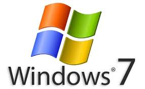

Riguardo a questo argomento insieme al prof Maffi abbiamo considerato in generale le cose principali da sapere in merito all'informatica di base.Abbiamo visto che cos'è un software e da cosa è costituito.Successivamente abbiamo parlato dei algoritmi e dei tipi di software che si dividono in software di base e quelli applicativi.Inoltre abbiamo analizzato meglio l'argomento sui sistemi operativi e abbiamo visto come si installa uno di questi.Questo argomento mi è piaciuto molto perchè io è da anni che uso Internet solo che non mi sono mai chiesto com'è veramente,oppure come fanno alcuni sviluppatori a creare delle app.Adesso che ho scoperto come sono più contento proprio perchè a me piace molto lavorare con i computer per sviluppare qualcosa tipo delle pagine web oppure documenti in Word o Power Point. |
|
 |
| |